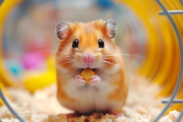
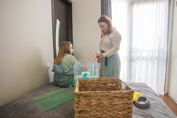

Usual food, timing, and comfort preferences are reviewed before check-in.
Meal & Habitat Basics
Food notes first
Fresh water access
Clean touch-ups
Feeding and cleaning routines stay clear, simple, and easy to follow.
Small pets do best when the basics feel familiar. We use owner notes, clear portion guidance, fresh water checks, and tidy habitat touch-ups to keep each day calm and predictable.
Bottles and bowls are checked often so hydration stays easy to monitor.
Spot cleaning keeps favorite corners cleaner without disrupting the whole space.
How We Handle It
Simple steps keep feeding and cleaning organized.
Rather than changing everything at once, we keep the routine light and structured so guests can stay comfortable while their enclosure stays neat.
Morning meal check
We confirm food intake, refresh water, and note anything unusual before the day gets busy.
Midday habitat reset
Messy spots are cleared, bedding is touched up, and comfort items are kept in place the day.
Evening tidy finish
Before rest time, the enclosure is checked again so the guest settles into a clean night space.
Clean Habitat Standards
Every enclosure gets quiet, careful attention.
Cleaning is handled with a small-pet mindset, which means staying observant and tidy without turning the routine into a stressful full reset every few hours.
- Food areas are kept easy to access and simple to monitor.
- Wet or messy bedding spots are refreshed through the day.
- Comfort items stay familiar unless owners ask us to change them.
- Feeding notes and cleaning notes stay easy to share in updates.

Your pet settles faster when meals match the routine they already know and love.
Favorite hides, feeding times, and little preferences help us plan the setup better.
Special handling requests or extra care details can be prepared before arrival.

Before Arrival
Send your routine notes once, and we will prepare the rest.
A few simple details about food, bedding, and habits help us keep feeding and cleaning easier, calmer, and more consistent from the first day.